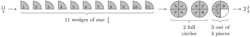
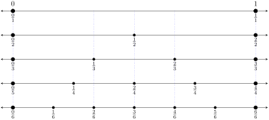

Understand and represent fractions and mixed numbers using parts of a whole.
Represent fractions and mixed numbers on a number line.
Reduce fractions, including fractions with variables.
Most students don’t like fractions. This is just a reality. This is unfortunate because fractions are everywhere in mathematical applications. A lot of students really only know fractions as a system of rules for manipulations, and have little intuition for what they represent and how we use them. Over the next few sections, we’re going to take a closer look at fractions with the goal of making fractions more understandable.
Definition17.1.Fractions.
A fraction is a mathematical expression of the form \(\frac{a}{b}\) where \(b \neq 0\text{.}\) We call \(a\) the numerator of the fraction and \(b\) the denominator of the fraction.
At its core, fractions are a representation of division. The fraction \(\frac{6}{2}\) can be interpreted as asking the question, "How many groups of 2 can we make if we have 6 objects?" The answer is and we can visualize it with a simple picture.
When this works out evenly, our answer is an integer. When it doesn’t, then we can also use fractions to communicate the leftover pieces. The fraction \(\frac{5}{2}\) asks the question "How many groups of 2 can we make if we have 5 objects?" The answer is \(2 \frac{1}{2}\text{.}\) The \(\frac{1}{2}\) part simply means that we have one out of the two pieces needed to create another group. We can visualize the missing piece with an unshaded box.
Numbers like \(2 \frac{1}{2}\) that are a mixture of an integer part and a fraction are called mixed numbers. They are commonly used in applications (such as stock prices and lumber measurements), but they are algebraically cumbersome to use. In fact, the mixed number \(2 \frac{1}{2}\) is really \(2 + \frac{1}{2}\) when it comes to algebraic manipulations. So we often leave fractions involving integers in their "improper" form.
The visualization of fractions above is known as "parts of a whole." The idea is that you have some concept of what a "whole" grouping looks like, and you’re trying to fill that in with the number of "parts" that you have. It is often the case that we use circles when talking about parts of a whole because it’s more intuitive if the whole is always the same final shape.
Converting between improper fractions and mixed numbers can be done using strict arithmetic methods, but it’s also important to develop that base intuition of what fractions are and how they behave. So rather than giving an explanation of converting between improper fractions and mixed numbers in words, we’re going to do it in pictures.
Activity17.1.Converting Improper Fractions to Mixed Numbers.
Here is the conversion of an improper fraction to a mixed number:
Try it!
Convert \(\frac{11}{4}\) from an improper fraction to a mixed number using a diagram.
Solution.

Activity17.2.Converting Mixed Numbers to Improper Fractinos.
Here is the conversion of a mixed number to an improper fraction:
Try it!
Convert \(2 \frac{3}{4}\) from a mixed number to an improper fraction using a diagram.
Solution.
The visualization of fractions as wedges of circles is one of two primary visualizations that we use for fractions. The second comes from the number line. A number can be represented by a position on the number line. Here are some examples:
For improper fractions and mixed numbers, we can continue doing this process and extend beyond the interval from 0 to 1.
Activity17.3.Locating Fractions on a Number Line.
When locating numbers on a number line, you do not need to mark all of the subdivisions between the integers, just the subdivisions between the integers you are focused on for your value. Here is how could be represented:
Try it!
Represent \(\frac{11}{3}\) on a number line.
Solution.
Let’s take another look at the number lines. Notice specifically that several of the fractions that are in the same position even though they have different denominators.

In fact, we can use the parts of a whole picture to visualize these relationships as well. Here are different fraction representations that result in the same amount shaded in:
What this means is that there are multiple fractions that represent the same number:
Two fractions are equivalent if they represent the same quantity.
This leads us to an important question: When are two fractions equivalent? If we look at the pattern of values, we can see that the fractions are related to each other by multiplying the numerator and the denominator by the same value.
There are many ways to think about this. One way to think about it is that we’re taking the parts of a whole diagram and cutting them into extra pieces without changing the shaded area. Here are two examples of this:
This gives us a general pattern that we can follow to generate equivalent fractions. If \(x\) is any non-zero number and is any fraction, then we have
When students are introduced to this, it is usually done with non-zero integers. However, this is true non-zero fraction and decimal values of \(x\text{.}\) In fact, it’s even true when is a non-zero variable or variable expression. In other words, the following are all equivalent (as long as the variable quantities are non-zero):
This idea can also be turned around. Sometimes there are complicated fractions with common factors that can be "cancelled out" to leave you with a simpler expression. But this can only be done if the numerator and denominator have the same factor and that factor is being multiplied by the rest of the numerator and denominator.
Convert \(\frac{12}{7}\) from an improper fraction to a mixed number using a diagram.
2.
Suppose you are given the fraction \(\frac{a}{b}\) where \(a\) and \(b\) are both integers and \(b \neq 0\text{.}\) Describe a calculation that would give you the corresponding mixed number without drawing out a diagram.
3.
Determine the values corresponding to the positions indicated in the diagram below.
4.
Completely reduce the fractions \(\frac{21}{28}\) and \(\frac{18}{48}\text{.}\)
5.
Completely reduce the fractions \(\frac{8x^2}{6x^4}\) and \(\frac{15x^5}{35x^2}\text{.}\)
Convert \(2 \frac{3}{8}\) from a mixed number to an improper fraction using a diagram.
2.
Suppose you are given the mixed number \(a \frac{b}{c}\) where \(a\text{,}\)\(b\) and \(c\) are all integers and \(c \neq 0\text{.}\) Describe a calculation that would give you the corresponding improper fraction without drawing out a diagram.
3.
Determine the values corresponding to the positions indicated in the diagram below.
4.
Completely reduce the fractions \(\frac{25}{40}\) and \(\frac{12}{27}\text{.}\)
5.
Completely reduce the fractions \(\frac{10x^3y^2}{25xy^5}\) and \(\frac{21a^3 b^3}{49a^3b^2}\text{.}\)
Algebra is a skill, which means it requires practice to become proficient. But it will take more than rote repetition to get there. Deliberate practice is the thoughtful repetition of a task. For each of these sections, you will be given a list of specific skills or ideas to focus on as you practice thinking through the problems.
Things get a bit more complicated when we start introducing decimals into fractions. The basic concept of thinking about fractions as division still applies, but it becomes more difficult to create diagrams.
Consider the fraction \(\frac{6.37}{1.32}\) This is asking "how many groups of size 1.32 can be made if you have 6.37 items?" Conceptually, it makes sense, and we can come up with some basic analogies to help us think through it, such as "How many items can you buy for \$1.32 if you only have \$6.37 to spend?"
While we really can’t draw an effective parts of a whole diagram for this problem, it’s possible to set this up with a number line diagram to represent division. And we can push forward with manipulating the symbols the same way we did for fractions.
In real life, we usually reach for a calculator for fractions involving decimals. We invented the technology precisely to help us with those situations. But this doesn’t negate the importance of having a conceptual foundation. While calculators can give us numerical results, it does not have the ability to conceptualize the idea of a fraction.
In this section, we used the intuition of "parts of a whole" with integer values to develop a pattern for manipulating fractions with variables. But we did not use any diagrams to try to represent those fractions. The reason is that our diagrams basically fall apart on us. Here are how different the pictures can look depending on the value of the variable:
The absence of concrete images makes fraction manipulations very abstract when we start involving variables. And this is where algebraic fluency really needs to kick in. As we go through the next few sections, we will be continuing to explore fractions. While we will be primarily working in the context of integer fractions, it is important to keep in mind that the algebraic processes that we’re developing can also be applied to variable fractions, and you will have to trust your algebraic fluency more and more as you get further along.
Usually, when students think of calculus, they think of extremely elaborate calculations and complicated algebraic manipulations. And while there are certainly some aspects of the course for which that is true, it turns out that the core concepts of calculus are ideas that you can understand without needing a lot of algebra.
One of the largest hurdles students face when they get to calculus is not the calculus, but the algebra. It is very possible to get all the way to calculus without having attained algebraic fluency. As the expressions get more complex, the error rate goes up. And this, much more than the calculus, ends up holding students back.
One area of algebra that students struggle with in particular is the manipulation of fractions. This is an extremely important skill because the main idea of the first half of calculus (differential calculus) is defined as a fraction. In theory, you already have all the skills required to perform the algebraic part of these calculations. You know how to perform a substitution, multiply polynomials, and combine like terms. The remaining algebraic step is to reduce the algebraic fraction.
In all of the examples and problems in this section, you were given a fraction where all the numerator and denominator were simply products of algebraic terms. This helps to give students the practice of matching up terms and reducing correctly in these situations. But it also leads students down the path of incorrect manipulations when they do not fully understand the cancellation process.
Over the next several sections, the "Going Deeper" sections are going to focus specifically on dealing with fractions involving polynomials, which are often called rational expressions. These sections are aimed at students who are on the pathway towards calculus to help develop specific algebraic skills that are useful along that pathway.
Reducing fractions is a mathematical process built on multiplication. You should be looking for terms that are multiplicative in the numerator and the denominator. More precisely, you need to be able to factor identical terms from the numerator and the denominator. This is why we chose to explicitly write out the products before reducing in this section.
Most of the errors that come from reducing fractions incorrectly result from different forms of simply crossing off terms that look the same in the numerator and the denominator. When you look at these calculations, you will probably immediately recognize them as being wrong. But it’s easy to identify errors when it’s someone else’s work and you’re being told that these are errors. It’s often more difficult when you’re looking at your own work.
Subsection17.5.1A Collection of Errors
Canceling addition: Do not cancel out terms when they are being added or subtracted. It must always be a multiplicative term to cancel.
Partial cancellation: This is another version of the previous error. Even though the terms are being multiplied by something, that something isn’t the entire remainder of the numerator and the denominator. The mistake here is canceling out part of an additive term.
Another partial cancellation: This one is tricky because there’s a half-truth to the cancellation. We’ll discuss this particular step in more detail later. The key for now is to recognize how we’re still canceling out within an additive term.
Breaking the order of operations: The multiplication being canceled must respect the order of operations. In this example, the and the should be seen as being grouped together, so that this cancellation cannot happen.
As you continue to move forward into the more algebraically complex world of rational expressions, it’s likely that you’re going to make some of these errors. The important thing is to not be discouraged. Mistakes are going to happen. The real key is how you respond to the mistakes when you make them. Students often have a reflex of "I forgot" and then quickly move on to the next thing. Unfortunately, this usually does not help them avoid that error in the future. It takes a certain amount of intentional effort and reflection to internalize the algebra.
A helpful recommendation is to keep a record of your algebraic errors. By writing them down, you can start to identify your own patterns of mistakes, which trains your brain to watch out for them in the future. It only takes a few seconds per mistake, but that’s sometimes all it takes to to get your brain to start to recognize it.
Subsection17.5.2Factoring Out the Constant (Including the Negative)
Having gone through a list of examples that don’t reduce, it’s also important to discuss certain types of fractions that do reduce. One type of factorization that students sometimes overlook is to factor out a constant. This can sometimes reveal binomial terms that factor out that are not immediately obvious. Here is an example:
One particular example of this is factoring a negative from the binomial. In general, when it comes to applications involving factoring, we try to keep the coefficient of the \(x\) term positive because it helps us to more easily recognize terms that can cancel out. Here is an example of this: